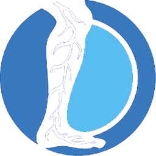
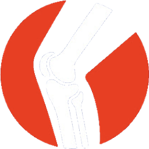

Dear Doctor,
You've met her.
She came in for her back, a bulging disc on the MRI. Halfway through, she mentioned her feet have been tingling for months. And on her way out the door, rubbing her knee, she said, "Don't even get me started on this thing."
Disc. Nerve. Knee.
Most practices treat the one she came in for. The other two walk right out the door, to somebody else, or to nobody at all.
And it isn't because those doctors don't know what they're looking at. You can identify disc pain. You can identify nerve pain. You can identify joint pain.
But how often can you tell when they're connected? When the knee is part of the disc story? When the tingling in her feet belongs in the same plan of care as her back?
And once you see it, how do you put it all together into one plan that does right by the patient and by your practice?
The practices we work with see all three. And in doing it, they become the disc doctor, the nerve doctor and the joint doctor in their market.
Dr. Bard and I call it the Triad of Patient Success.

Nerve
Knee"All roads lead to disc."
Years ago, Dr. Bard and I coined a phrase: all roads lead to disc.
Back pain. Leg pain. Numbness, tingling, pins and needles. Radiating pain. Balance problems. So many of the patients walking through a chiropractor's door could have a spinal disc condition at the root of it. Your job is to discern that, order the right test, and give that patient an experience they've never had before.
That idea built DISC Centers of America.
Then we learned something. The same patients kept showing up with nerve problems. Neuropathy. Patients looking for something beyond another prescription. So we built the same systems for the nerve world.
And then, over the past year, the knee cases started coming through our doors. More and more of them, and not just patients in their 60s and 70s. Patients in their 30s and 40s, too.
That's when it clicked for us. These weren't three different businesses.
"Many people that have disc problems have knee problems. Many people that have knee problems have neuropathy."
Dr. Eric Kaplan, from our Triad training
Disc, nerve and knee. They go together. When you make a change in one area of the body, it shows up somewhere else. And once you start looking at your patients that way, you can't stop seeing it.
The bridge most doctors never cross
Here's the part I find fascinating.
If you've ever explained the phases of spinal degeneration to a patient, you already know how to explain the knee. Loss of disc height. Loss of cartilage height. Stage one, stage two, stage three, stage four. There's a parallel, and there's a bridge between how you present a spinal disc condition and how you present a knee.
The same story
Stage 1 of 4
Dr. Bard said it best when we taught this:
"We don't cure things. What do we do? We control and we contain. It is so much in the language. It is so much in the communication."
Dr. Perry Bard
That's the Triad. It isn't a new gadget or a gimmick. It's a way of seeing the whole patient, and a way of explaining it so she understands why you're the doctor to help her.
Our friend Dr. Jay Lombard, the New York neurologist who has taught alongside us, puts it simply. When you approach a patient, "leave no single stone unturned."
The Insurance Treadmill
Now let's talk about the part nobody likes to talk about.
You know the feeling. It's 6:40 on a Thursday night. The last patient's gone. You're holding an EOB that paid less for the same visit than it did a few years ago. And every year, the finish line moves a few more feet.
We call that the Insurance Treadmill. You can run on it your whole career and never get anywhere you wanted to go.
And you didn't do anything wrong. You got good with your hands. You built the schedule. You kept the volume up. The system just wasn't built to reward you for it.
"It's the greatest profession in the world, but it's not an easy business. So what did Perry and I do? We made it easier."
Dr. Eric Kaplan
Here's what we've seen in the practices that step off the treadmill. They become the disc doctor in their market. The nerve doctor. The joint doctor. They offer care that patients choose for themselves, and they don't have to be insurance dependent to do it.
They brand it. They systematize it. They put protocols around it. They market it. And they communicate it with confidence.
Success leaves clues. We've spent 80 years between us collecting them.
Want to learn it from us in person? Request your free seat for November 21 →
What doctors say after they learn it
Thanks to Dr. Kaplan, Dr. Bard and The Chiro Event, I have been able to finally create the dream practice that I envisioned, and now I am the go-to disc and nerve specialist in my market.
Love the training, the research, and the way they help me explain things to my patients and overcome objections. That's why I bring my staff with me. It's a win-win.
 Dr. Mark Groff
Dr. Mark GroffWhen they say "under-promise and over-deliver," that's exactly what they do. The content is unmatched, and I came from California.
Learn the Triad live in New York City
On Saturday, November 21, Dr. Bard and I are teaching the whole thing in one day at a 5-Star Location in New York City.
Here's what we'll cover:
- Disc. How to position yourself as the disc doctor in your market, with non-surgical spinal decompression at the center.
- Nerve. How to bring neuropathy care into your practice, and how to explain it so patients understand it.
- Knee. The bridge between disc and knee, and how to present non-surgical knee and joint care.
- Off the treadmill. How the practices we work with build care patients choose, so they don't have to be insurance dependent.
- Getting found. Laser therapy marketing, social media and A.I. marketing, and personal injury marketing.
And you won't leave empty-handed. You'll walk out with 1,000+ pages of manuals, scripts and tools, including our 200+ page Framework of Success manual.
- Your seat for the full day of training, 100% free, based on seat availability
- One free guest seat for an associate or your CA, based on seat availability
- A gourmet lunch, on us
- 1,000+ pages of materials to take home
- Bonus: the University Edition of the Ultimate Spinal Decompression Book, while supplies last
Seating is limited and every request is reviewed. Lacey will call you about your seat.
Request my free seatWhy free? Because Dr. Bard and I are in this for the profession. Our sons are chiropractors too. One day is enough to show you what this is worth, and we'd rather you see it for yourself than take our word for it.
"Nothing to sign, no pressure, no obligation. Just a day of content, tools and materials with some of the most entrepreneurial chiropractors on the planet."
Dr. Perry Bard
I hope to see you in New York.
with Dr. Perry Bard
P.S. Remember the patient who came in for her back? She's going to walk into somebody's practice this week with a disc, a nerve and a knee. The only question is whether that practice is the disc doctor, the nerve doctor and the joint doctor she needs. Request your seat below, or call Lacey at 888-990-9660.